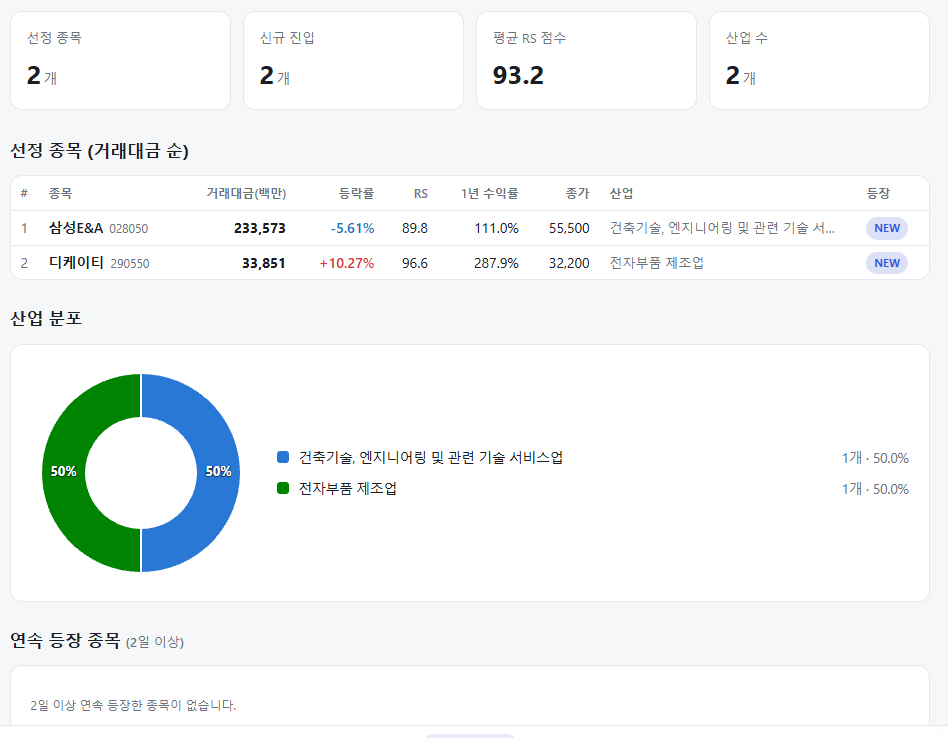
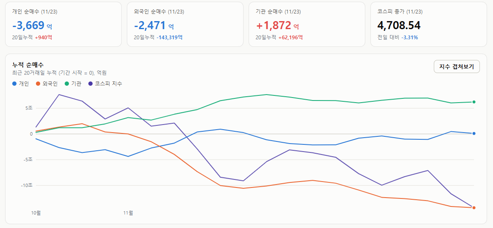
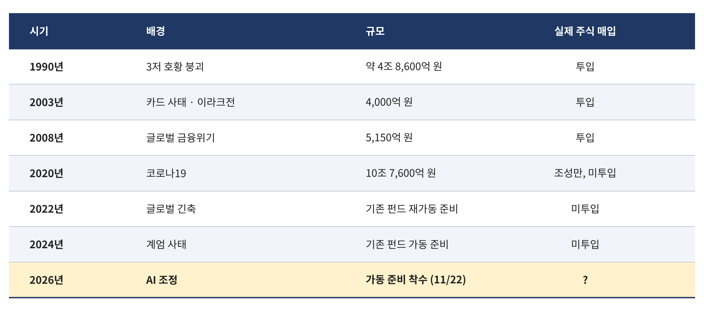

매일의 주도주 정리를 위해 기록합니다.
연속적으로 나온 종목들 또는 상승 후 조정받는 종목 위주로 리서치 해보시면 좋을 것 같습니다.

*오늘의 퀀트픽 '디케이티' 입니다.
3분기 영업이익이 1년 전보다 2.7배로 늘어 깜짝 실적, 일등 공신은 ESS용 배터리관리장치입니다. 스마트폰 의존이 줄어드는 구조 변화가 확인
주가 급등은 실적에 더해, 내년 1월 CES에서 삼성 휴머노이드가 공개될 수 있다는 기대
증권사 목표가는 4만원대로 상향
#주도섹터
* 지수 급락 속 상대적 강세(낙폭 제한): 화장품, IT 부품·통신장비
* 주요 업종 및 종목: 경기소비재(-1.60%), 내구소비재와의류(+0.32%), 기술하드웨어와장비(-0.40%), 화장품(+1.16%), 전자장비와기기(-0.29%), 통신장비(-0.33%), 에이피알(+9.13%), 삼성전기(+0.52%), 심텍(+2.41%), RFHIC(+8.43%), SK스퀘어(+0.44%).
* 분석: 업종 소분류 78개 가운데 상승이 3개에 그친 급락장이어서, 오늘의 주도섹터는 오른 업종이라기보다 낙폭이 작았던 업종입니다. 화장품은 거래대금 3,820억 원이 몰리며 +1.16%로 플러스를 지켰는데, 아모레퍼시픽(-2.58%)과 LG생활건강(-2.39%)이 내린 가운데 에이피알(+9.13%)이 업종을 끌어올렸습니다. 전자장비와기기(-0.29%)는 거래대금 1조 2,480억 원으로 반도체 다음으로 많은 자금이 오가면서도 낙폭이 작았고, 삼성전기(+0.52%)와 심텍(+2.41%)이 버텼습니다. 통신장비도 -0.33%로 낙폭이 제한됐으며 RFHIC(+8.43%)에 매수세가 유입됐습니다.
#조정섹터
* 소프트웨어·IT서비스와 인터넷, 건설, 금융
* 주요 업종 및 종목: 커뮤니케이션(-5.37%), 금융(-4.36%), 소프트웨어와서비스(-6.97%), 미디어와엔터테인먼트(-5.38%), 은행(-4.80%), IT서비스(-9.08%), 양방향미디어와서비스(-6.85%), 건설(-6.82%), 삼성에스디에스(-15.42%), LG씨엔에스(-13.93%), NAVER(-7.18%), 카카오(-6.61%), 현대건설(-8.80%), KB금융(-5.71%).
* 분석: 대분류 10개가 모두 내린 가운데 커뮤니케이션(-5.37%)과 금융(-4.36%)의 낙폭이 가장 컸습니다. IT서비스는 거래대금 5,411억 원이 실리며 -9.08%로 소분류 중 가장 크게 밀렸고, 삼성에스디에스(-15.42%)와 LG씨엔에스(-13.93%)에 매도 물량이 집중됐습니다. 양방향미디어와서비스(-6.85%)도 NAVER(-7.18%)와 카카오(-6.61%)가 함께 내리며 약세를 보였습니다. 건설은 거래대금 4,722억 원에 -6.82%로 현대건설(-8.80%)과 삼성E&A(-7.96%)가 약세를 이끌었고, 은행(-4.80%)도 KB금융(-5.71%)과 하나금융지주(-5.33%)를 중심으로 매물이 나왔습니다.
#수급동향

*코스피 지수는 -3.31% 하락한 4,708.54로 마감하며 2거래일 연속 하락했습니다. 코스닥 지수는 -1.58% 내린 635.45를 기록하며 역시 2거래일 연속 하락했습니다.
* 유가증권시장에서 외국인 투자자는 2,472억 원(누적 수급 집계 기준 -2,471억 원, 20일 누적 -14조 3,319억 원)을 순매도했습니다. 개인 투자자도 3,669억 원(집계 기준 -3,669억 원, 20일 누적 +940억 원)을 순매도했고, 기관 투자자는 1,872억 원(집계 기준 +1,872억 원, 20일 누적 +6조 2,196억 원)을 순매수했습니다.
* 코스피 시장에서는 상승 종목이 71개, 하락 종목이 824개(보합 13개)로 집계되어 하락 종목이 상승 종목을 크게 웃돌았습니다.
증안펀드 딜레마 — 꺼내놓고 망설이는 이유, 그리고 저점을 만든 것은 따로 있었다
지난 금요일 나스닥은 -5.28%, 필라델피아 반도체지수는 -10.73%, 엔비디아는 -14% 내렸습니다. 오늘 코스피는 이틀 연속 매도 사이드카가 걸리며 오전 한때 4,591까지 밀렸습니다. 6월 고점 9,114의 절반입니다.
그 사이 정부가 움직였습니다. 일요일인 22일 경제·금융 수장 네 명이 긴급회의를 열고 증권시장안정펀드(증안펀드) 가동 준비를 공식화했습니다. 그런데 다음 날 시장은 다시 장중 5% 넘게 내렸습니다. 왜 꺼내놓고 쓰지 않는지, 쓴다면 효과가 있을지 정리합니다.
① 결정된 것은 '가동'이 아니라 '준비'
22일 회의의 결정은 세 가지입니다. 증안펀드를 시장 상황에 따라 바로 가동할 수 있도록 준비에 착수하고, 상장사의 하루 자사주 매수주문 한도를 24일부터 3개월간 완화하며, 불법 공매도를 3개월간 집중 감시합니다. 언제 얼마를 투입할지는 정하지 않았습니다. 이형일 부총리는 오늘 간담회에서 "시장을 계속 살펴보고 판단하겠다"고 했습니다.
증안펀드는 증시가 급하게 내릴 때 금융회사들이 낸 돈으로 주식을 사들여 시장을 안정시키는 장치입니다. 나랏돈이 아니라 금융회사 10조 원과 증권 유관기관 7,600억 원의 출자 약정이고, 요청이 있을 때 나눠 내는 구조입니다.
② 딜레마의 구조
13일 대통령 주재 간담회에서 두 가지 의견이 나왔습니다. 김진욱 씨티은행 수석이코노미스트는 실제로 돈을 넣지 않아도 정부가 살 준비가 돼 있다는 신호만으로 투매를 줄일 수 있다고 했습니다. 박세익 체슬리투자자문 대표는 코로나 때도 조성만 하고 쓰지 않았다며 실제로 작동하는 펀드여야 한다고 했습니다.
대통령은 인위적 개입이 오히려 시장 불신을 키우지 않는지 물으면서, 실효적으로 작동할 방법과 적정 규모를 점검하라고 주문했습니다. 금융위원장은 시장 전체가 위기일 때 한시적·예외적으로 쓰는 수단이라고 답했습니다.
딜레마는 이렇습니다. 신호가 통하려면 "필요하면 정말 쓴다"는 믿음이 있어야 합니다. 그런데 실제로 썼다가 하락을 막지 못하면 펀드의 효과뿐 아니라 정부의 시장 안정 능력까지 의심받습니다. 쓰지 않으면 신호가 약해지고, 쓰면 신호의 한계가 드러날 수 있습니다. 오늘 시장이 "준비" 발표를 받아주지 않은 것은 앞쪽 문제가 이미 나타났다는 뜻입니다.
③ 숫자로 본 한계
펀드 규모는 2020년에 정한 10조 7,600억 원 그대로입니다. 그 사이 시장은 네 배가 됐습니다.
2020년: 코스피 시가총액 1,000조 원 미만, 펀드는 시총의 약 1%
2026년: 시가총액 약 4,147조 원(11월 18일), 펀드는 시총의 약 0.24%
외국인 매도와 비교하면 더 분명합니다. 외국인은 9~10월 두 달간 45조 원을 팔았고, 11월 첫 주에만 10조 원 넘게 팔았습니다. 10조 원은 외국인이 일주일에 팔 수 있는 물량입니다. 간담회에서 100조 원으로 키우자는 주장이 나온 배경입니다.
④ 과거의 기록 — 저점을 만든 것은 무엇이었나

증안펀드는 다섯 차례 조성됐고 실제 투입은 1990년, 2003년, 2008년 세 번이었습니다. 금융연구원은 2024년 보고서에서 과거 증안펀드가 하락 추세를 바꾸지 못했고, 규모가 시가총액의 0.1~0.7%에 그친 것을 이유로 들었습니다.
저점이 만들어진 순서를 보면 더 분명합니다. 2008년 코스피 저점은 10월 24일이었고, 반등의 계기는 10월 30일 한미 통화스와프였습니다. 증안펀드 자금은 그 뒤인 11월부터 들어갔습니다. 2020년에는 3월 19일 저점 이후 한미 통화스와프와 연준의 무제한 양적완화가 나왔고, 증안펀드는 발표만 되고 쓰이지 않았습니다. 1990년에는 5조 원 가까이 투입했지만 저점은 2년 뒤에 왔습니다.
증안펀드가 저점을 만든 적은 없습니다. 저점은 달러 유동성과 통화정책이 만들었고, 증안펀드는 그 뒤를 받쳤습니다. 금요일 글에서 "반등의 크기를 가른 것은 통화정책"이라고 쓴 것과 같은 결론입니다.
⑤ 투자자에게 뜻하는 것
증안펀드는 방향을 바꾸는 장치가 아니라 속도를 늦추는 장치입니다.
그래서 봐야 할 것은 투입 여부가 아닙니다.
- 12월 9일 FOMC: 지금 하락의 한 축은 금리 인상입니다. 과거 저점을 만든 것이 통화정책이었다면 이번에도 열쇠는 여기에 있습니다.
- 외국인 매도의 속도: 10조 원이 의미 있으려면 매도 물량이 먼저 줄어야 합니다.
- 자사주 매수: 세 조치 중 가장 실질적일 수 있습니다. 현금이 많은 대형주가 한도 완화를 실제로 쓰는지가 내일부터 확인됩니다.
정부가 망설이는 이유는 이해할 수 있습니다. 시총의 0.24%짜리 실탄을 쏘고도 막지 못하면 다음 카드가 없기 때문입니다. 다만 과거 기록은 한 가지를 분명히 말합니다. 시장을 돌려세운 것은 주식을 사주는 돈이 아니라 금리와 달러 유동성이었습니다. 증안펀드에 기대를 걸 필요도, 투입되지 않는다고 실망할 필요도 없습니다.
안전판은 바닥을 만드는 것이 아니라 떨어지는 속도를 늦추는 것입니다. 바닥은 다른 곳에서 옵니다.
지난 금요일 미국 시장 급락이후 미 재무장관까지 나서 연준의 과도한 긴축을 경고했습니다. 조만간 통화정책 및 유동성도 유리한 환경으로 바뀔수 있겠습니다.
오늘 하루도 수고하셨습니다.